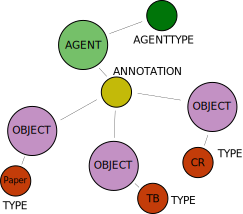

Data Models¶
Currently there are several models for relationships within Throughput:
Data Use and Reuse
Databases linked to code repositories
Papers linked to GitHub code repositories
Text annotations linked to datasets (linked to databases)
Credit tracking
Grants linked to databases
Grants linked to code repositories
Grants linked to papers
Data Reuse¶
Throughput aims to help people find ways to use data that meet their needs as a researcher. For example, we want to help early-career researchers find ways to undertake multidisciplinary analysis that combines climate data and information about land use. To do this, a student must find the appropriate data resources and then understand how to undertake analysis on these resources.
Data(base)-to-Code Connections¶
A research database may have many uses, through APIs, direct data downloads, or SQL connections to the databases. Throughput links to each repository that uses a particular data resource. This code is publicly available at the Throughput re3 scraper repository.
Using schema:DataCatalog OBJECT nodes we can create an annotation that
links to a schema:CodeRepository OBJECT. The ANNOTATION node
identifies the link between the two records, and can be supplemented with an
OBJECT node of TYPE TextualBody. This last object has an explanation
of why the annotation was made.
The annotation includes information about the AGENT that has generated the
annotation. This may include either an individual who created the specific annotation,
or a set of annotations generated programatically. The AGENT can be
identified using the AGENTTYPE.

Sample Query¶
# Search for all code repositories linked to a database:
MATCH (n:OBJECT)-[:isType]-(:TYPE {type:"schema:DataCatalog"})
WHERE n.name CONTAINS "searchTerm"
MATCH (o:OBJECT)-[:isType]-(:TYPE {type:"schema:CodeRepository"})
WITH n, o
MATCH p=(n)-[]-(:ANNOTATION)-[:Target]-(o)
RETURN p
LIMIT 10
Paper-to-Code Connections¶
Research papers contain detailed methodologies that are supported by peer reviewed literature. This supporting information may be lost when users rely only on the code. By linking code in code repositories to published articles, and the published articles to the code repositories, we make both more discoverable, and provide a clear link, and attribution to the citation itself.
Using schema:Article OBJECT nodes we can create an annotation that
links to a schema:CodeRepository OBJECT. The ANNOTATION node
identifies the link between the two records, and can be supplemented with an
OBJECT node of TYPE TextualBody. This last object has an explanation
of why the annotation was made.
The annotation includes information about the AGENT that has generated the
annotation. This may include either an individual who created the specific annotation,
or a set of annotations generated programatically. The AGENT can be
identified using the AGENTTYPE.
Sample Query¶
# Search for all code repositories linked to a database:
MATCH (n:OBJECT)-[:isType]-(:TYPE {type:"schema:Article"})
WHERE n.doi CONTAINS "10.1002/ecy.2856"
MATCH (o:OBJECT)-[:isType]-(:TYPE {type:"schema:CodeRepository"})
WITH n, o
MATCH p=(n)-[]-(:ANNOTATION)-[:Target]-(o)
RETURN p
LIMIT 10
Text-to-Dataset Connections¶
Research papers contain detailed methodologies that are supported by peer reviewed literature. This supporting information may be lost when users rely only on the code. By linking code in code repositories to published articles, and the published articles to the code repositories, we make both more discoverable, and provide a clear link, and attribution to the citation itself.

Using schema:Dataset OBJECT nodes we can create an annotation that
links to a TextualBody OBJECT. The ANNOTATION node
identifies the link between the two records. This last object has an explanation
of why the annotation was made.
The annotation includes information about the AGENT that has generated the
annotation. This may include either an individual who created the specific annotation,
or a set of annotations generated programatically. The AGENT can be
identified using the AGENTTYPE.